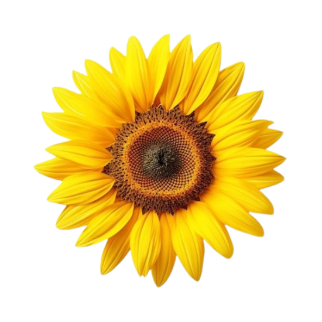
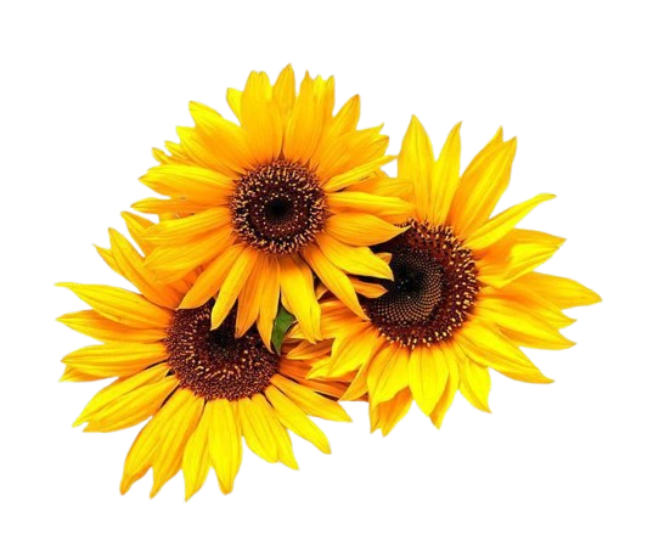

Happy Valentine's Day


.png)
ถ้าวันวาเลนไทน์ปีนี้ไม่ได้ดอกไม้ อย่าเพิ่งรู้สึกเสียใจไปเลยนะ เพราะดอกไม้เป็นเพียงสัญลักษณ์เล็ก ๆ ของความรัก แต่มันไม่ได้วัดคุณค่าของเราหรือความรู้สึกที่แท้จริงจากใครสักคน
บางครั้งเราอาจจะโฟกัสกับสิ่งที่คนอื่นได้รับ จนลืมไปว่าความรักนั้นมีอยู่รอบตัวเราเสมอ ไม่ว่าจะเป็นความห่วงใยจากครอบครัว การสนับสนุนจากเพื่อน หรือแม้กระทั่งความรักที่เรามอบให้ตัวเอง อย่าปล่อยให้วันหนึ่งวันมาวัดคุณค่าของความรักในชีวิตเราเลย
ความรักที่แท้จริงไม่ได้ถูกจำกัดอยู่ในดอกไม้ การ์ด หรือของขวัญ แต่มันอยู่ในการใส่ใจ การห่วงใย และการยืนอยู่เคียงข้างกันในวันที่เราต้องการที่สุด หากวันนี้ไม่มีดอกไม้จากใคร ก็ลองหันกลับมามอบความรักและความชื่นชมให้กับตัวเองดูบ้าง เพราะบางครั้งคนที่เราลืมให้ความสำคัญมากที่สุดก็คือตัวเราเอง
อย่าลืมนะว่า ความสุขไม่ได้มาจากสิ่งที่เรามีหรือสิ่งที่คนอื่นมอบให้ แต่มาจากใจของเราที่รู้จักพอใจและรู้คุณค่าในตัวเอง ดอกไม้ไม่ใช่ตัวบ่งบอกความรัก ความห่วงใยต่างหากที่สำคัญที่สุด
หากวันนี้รู้สึกเหงาหรือโดดเดี่ยว ลองใช้เวลาทำสิ่งที่ตัวเองรัก ใช้เวลาพักผ่อน ดูหนัง ฟังเพลง หรือพูดคุยกับคนที่เราไว้ใจ เพราะความรักที่ดีที่สุด คือความรักที่เราให้กับตัวเองและคนที่เห็นคุณค่าของเราเสมอ
และจำไว้นะ ไม่จำเป็นต้องมีดอกไม้ในมือเพื่อจะรู้สึกมีคุณค่า เพราะคุณมีค่ามากกว่านั้นเสมอ ❤️